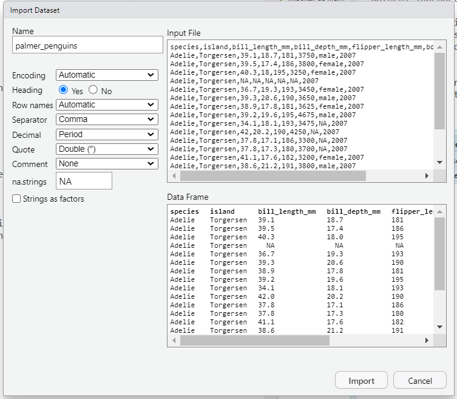

data <- read.table("ruta/del/archivo.txt", header = TRUE, sep = "\t")Importar y exportar datos
Importar archivos de texto
La importación de archivos de texto es el primer paso y parte fundamental para la exploración de datos. Sin embargo, también puede llegar a ser una tarea complicada.
Los tipos de archivos mas comunes con los que solemos trabajar son:
- Archivos separados por coma (csv)
- Archivos separados por tabulador (tsv)
- Excel (xls)
- Archivo de texto simple (txt)
Funciones base para importar archivos
Importar usando ventanas
Rstudio permite importar un set de datos de forma muy sencilla dentro de su IDE. Para esto, tenemos que posicionarnos en la pantalla de ambiente Environment y seleccionar la opción de importar un set de datos Import Dataset

Una vez seleccionado el archivo, tenemos la opción de seleccionar el tipo de separador, formato y encabezados de las columnas.

Al concluir, el set de datos estará disponible en nuestro ambiente.
Importar desde la línea de comando
Para importar un archivo a nuestro ambiente podemos utilizar las funciones base de R mas relevantes que son read.table y read.csv. Por ejemplo, para abrir un archivo txt separado por tabuladores o csv separado por comas, respectivamente. utilizando la función:
La sintaxis básica de read.table es la siguiente
file: Ruta del archivo que quieres importar.header: Indica si el archivo tiene una fila de encabezado. Si esTRUE, la primera fila se usará como nombres de columnas.sep: Especifica el delimitador de los valores. Por ejemplo,"\t"para archivos separados por tabulaciones o","para comas.
Por otro lado, read.csv cumple con la misma función que read.table solo que es mas especifica para archivos separados por coma, por lo que no es necesario incluir el parámetro sep.
Ejercicio
Utilizando la función read.table o read.csvabre el archivo dataset_Pomemon.csv que descargaste previamente en la carpeta de datos